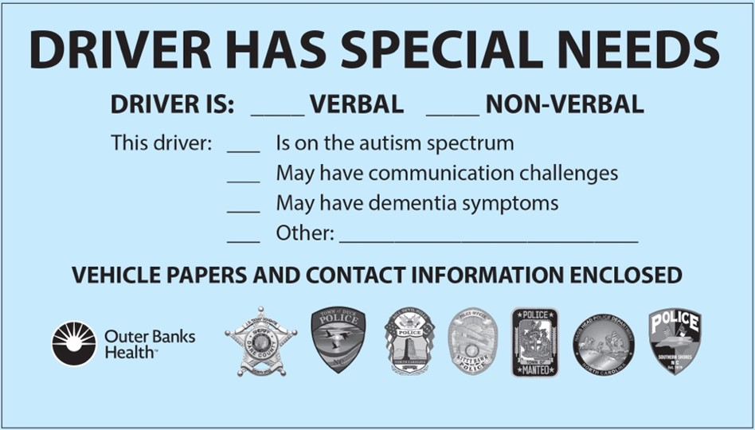

01
Connecticut
2020
DMV Statewide
Active
A 90-second proposal for Union County, North Carolina
A standard #10 blue envelope. On the front: the driver's license, registration, and insurance — plus brief notes for the officer. On the back: tips for both the driver and the officer about how to communicate during a stop. Free, voluntary, and self-contained. Nothing high-tech. Nothing expensive. Nothing that requires a database or registry.
A typical Blue Envelope as used in active state programs.

Four numbers that should make Union County uncomfortable.
North Carolina’s own bill is stuck. Union County does not have to wait.
+ County programs in Dare County NC, San Diego CA, Monmouth NJ, Placer CA, Boulder CO, Loudoun VA, and others.
One person. Outer Banks Health Speech Language Pathologist Kristin Kuhar saw the program in another state and brought it home.
Seven agencies. Within months she built a coalition of every police department in Dare County plus the Sheriff’s Office.
One year. The program launched in July 2024 with free envelopes at police lobbies, libraries, medical practices, senior centers, and high schools.
No new law required. Voluntary. Self-implemented. Already running.
The whole thing costs less than a good office chair. Here’s the breakdown.
For comparison: San Diego County’s heavily produced launch with full media campaign was budgeted at $75,000. Union County does not need that scale to begin.
The driver does two. The officer does one.
Driver picks up a free blue envelope at any participating Union County PD lobby, library, or DMV pop-up event. No registration, no proof of diagnosis required.
Driver places copies of license, registration, and insurance inside the envelope, along with optional emergency contacts and personal communication notes.
During a traffic stop, the driver hands the envelope to the officer. The officer immediately knows to slow down, reduce sensory input, and use single-step instructions.
14 shots in under 2 seconds.
— Pocatello, Idaho, April 5, 2025. Victor Perez, 17, was a nonspeaking autistic Latino teen with intellectual disability and cerebral palsy. Officers fired 14 rounds in under two seconds. Twelve struck him. He died. The Idaho Attorney General declined to file charges, citing that “the officers were not familiar with Perez’s limited capabilities.” His family filed a federal ADA lawsuit in June 2025.Five phases. No legislation required.
The materials are here. The model is proven. All that’s missing is a conversation.